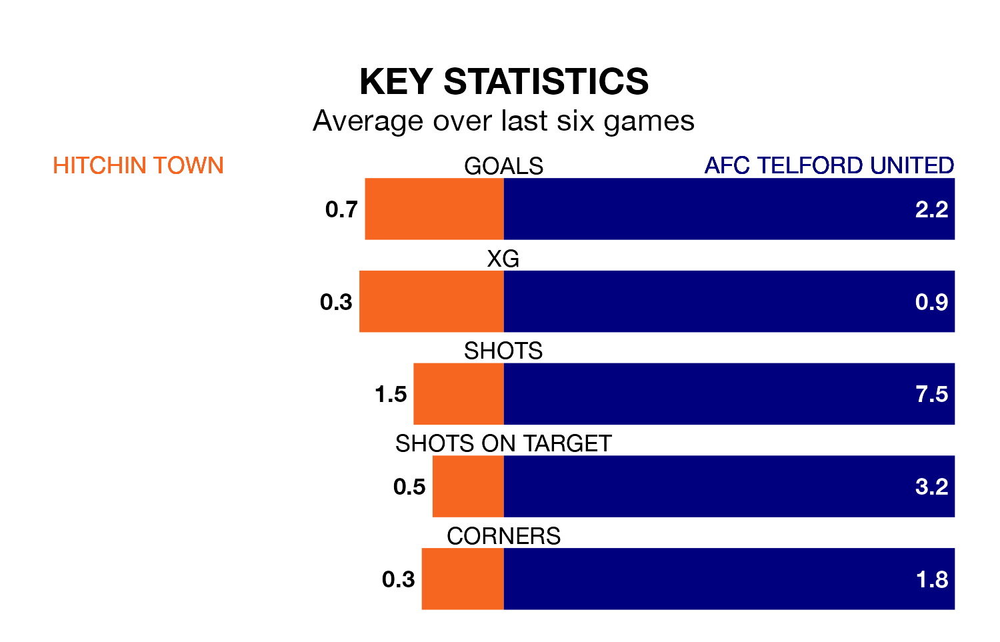

AFC Telford United are strong favourites to take all three points despite Hitchin Town's home advantage in Saturday's match at Top Field.
*Betting Company* are offering odds of 1.7 on Telford United sealing the win, with the visitors sitting third in the Southern League Premier Central table.
Hitchin, who are 17th in the league and 23 points behind the Bucks, are priced at 3.91 to win. A draw is set at 3.82.
Hitchin are in awful form in the Southern League Premier Central, with no wins and six losses from their last six games.
With five wins and one loss over that period, Telford United's form is much better – they have taken 15 points from 18, compared to Town's zero.
With 48 goals in 35 games so far this season, the home side are scoring at below the league average rate with 1.4 goals per game. And they are conceding more than average, letting in 57 goals at a rate of 1.6 per game.
The Bucks, meanwhile, are above average scorers, with 1.6 goals per game, compared to a league average of 1.5. They have conceded 0.9 goals per game.
Hitchin's last match was on March 16, a 3-0 loss against Leamington.
Telford United beat Stamford 2-1 last time out, also on March 16.
Updated: 10:19 (UTC), 22/03/24